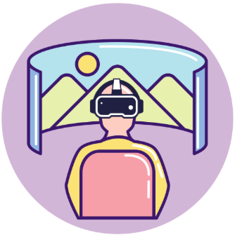

Bidirectional Loop between:
Human Signals and Trustworthy LLMs
“I turn human signals into evaluation, alignment, and adaptation for LLM-powered AI systems”
Xin Sun
13 July 2026
Specially Appointed Assistant Professor · NII, Japan
Research Background
interdisciplinary background
Human-Centered AI
(Natural language processing, NLP &
Human-computer interaction, HCI)
Cognitive Science
(Mixed-methods empirical studies
with behavioral & physiological sensing)
Trustworthy Human–AI Interaction
from both sides — humans align AI ⇆ AI augments humans
Research Motivation: Human Signals ⇄ LLM Support — Neither Is Always Right
LLMs are aligned with humans and trained on human data to support humans, however :
Humans
(cognition & behavior)
LLMs
(behavior & mechanism)
evaluates both humans & LLMs
The Framework: One Loop, Three Layers — Mechanism · Method · Modeling
Turn human signals into a trustworthy Human ⇄ LLM loop.
— with both directions trustworthy —
4 / 11Evaluate
LLM as Judge
Diagnose how humans and LLMs judge — and where they fail alike.
5 / 111 · Evaluate: Can We Trust the Judge — Humans and LLMs?
LLMs learn from human data — so do they judge like us? We probe both, three ways:
The mirror — same biases, same mechanism, yet LLMs weigh evidence unlike us.
next · Align — teach LLMs to learn from humans selectively →
6 / 111 · Evaluate: LLM-as-a-Judge for Health Information
Research Question: whether humans and LLM-as-a-Judge evaluate the information differently?
Example · one trial
Label: Human-written“Daily walking helps lower blood pressure.”
identical content — only the source label flips.
click to flip the labelReadout · what changes when the label flips
Human trust
HIGHER under human label
LLM-as-a-Judge trust
HIGHER under human label
Judge decision uncertainty
LOW under human label
participants
judges
models
Takeaways: Humans and LLM-as-a-Judge shift the same way — identical content is trusted more under a human label.
[a] Sun et al. Label Effects: Shared Heuristic Reliance in Trust Assessment by Humans and LLM-as-a-Judge (ACL 2026) Core A*
[b] Sun et al. Understanding Trust Perception in AI-Generated Information with Behavioral and Physiological Sensing (IJHCS 2026) Top Tier JCR-1
1 · Evaluate: Are the Judge’s Signals Independent — or One Correlated Verdict?
Research Question: are LLM judge’s multi-fields judgment independent evidence — or one correlated output?
1One judge · many dimensions
should be independent quality axes
they move as one → the judge can’t score objectively
2Trust vs Truth
humans keep these apart — trust ≠ truth
they rise & fall together → false-but-trusted reads as true
Takeaways: change only who wrote it, and every score moves the same way — one biased verdict, not separate checks.
[i] Sun et al. When Trust Meets Truth: Trust–Truth Separability in LLM-as-Judge (EMNLP 2026, to appear) Core A*
1 · Evaluate: Beyond Behaviors - Mechanistic Evaluation for LLMs and Humans
mechanistic
patterns
Takeaway: human gaze and LLM attention show the similar mechanistic patterns — both over-attend the label cue, not the content.
[a] Sun et al. Label Effects (ACL 2026) Core A* — behavioral results, mechanistic analysis across LLM families
Align
LLM as Learner
Selectively learn human expertise — resist the bias Evaluate exposed.
7 / 112 · Align: Learn Human Expertise, Keep Out the Bias
Human data holds both expertise and bias — so we align LLMs selectively: keep the “good” signals, drop the bias.
a right model is still one-size-fits-all — next: how to adapt LLMs to each user's live state? →
8 / 112 · Align: Domain-Specific Benchmarks Creation
Research Question: what do expert strategies look like — as these data LLMs can learn from and be tested against?
1Collect & code real sessions
real psychotherapy · EN + Dutch · every turn labeled by therapist experts
2Organize into a strategy tree
expert codes + evidence-based scripts → phases & strategies
Domain-specific strategy and script Engaging Evoking Planning Reflection Open Question Affirmation ▲ next strategy Elicit Change Talk Advice w/ PermissionTakeaways: the benchmark makes human expertise measurable — defining what to align LLMs to.
[d] Sun et al. Eliciting Motivational Interviewing Skill Codes in Psychotherapy with LLMs: A Bilingual Dataset and Analytical Study (COLING 2024) Core B
[c] Sun et al. Script-Strategy Aligned Generation (ACM CSCW 2025) Core A
2 · Align: Supervise Models with Domain Expertise, Not Simply Imitate
Research Question: align LLM to domain-specific expertise and strategies, not only raw human imitation.
Encodestrategy tree
Expert strategies as a tree — not raw dialogue to imitate.
Reasoning for StrategyCoT → next strategy
Predict the next strategy — an interpretable control point.
Generating Dialogueconditioned · controllable
Generate the response conditioned on that predicted strategy.
[c] Sun et al. Script-Strategy Aligned Generation (ACM CSCW 2025) Core A
[e] Sun et al. Rethinking the Alignment of Psychotherapy Dialogue Generation (COLING 2025) Core B
2 · Align: Multi-Agent Therapeutic Dialogue Generation
Research Question: expert data is scarce — can LLM agents generate it, with domain-specific strategies under control?
coordinates both agents · sets each turn’s strategy
Agent
Agent
“What makes exercise hard for you?”
“Honestly, I just don’t have the time.”
Multi-agent simulation · coded turn by turn
Benchmark Results
Evaluated on
- lexical quality
- domain-strategy adherence
- LLM-judge + expert review
Takeaways: with strategy control, LLM agents turn scarce expert data into clinically-plausible alignment supervision — at scale.
[j] Sun, et al. StoryMI: Steerable Multi-Agent Therapeutic Dialogue Generation. co-authored (ACL 2026)
2 · Align: How LLMs Learn the “Bad” Human Signals
Research Question: how do LLMs learn the “bad” signals from humans? — through alignment training:
Pre-train next-token prediction
SFT supervised fine-tuning
DPO preference optimization
Installed bias measured across training stages · two heuristic cues
Takeaways: alignment training installs the human bias — Pre-train · least › SFT · moderate › DPO · significant.
[j] Sun et al. Installed by Preference, Not by Exposure: Heuristic Cue Biases in LLM Judges (AAAI 2026, under review) Core A*
Adapt
LLM as Partner
Adapt to each user's live state — support the person, not the average.
9 / 113 · Adapt: Why Adapt — From an Aligned Model to the Right Support
support tuned to this user, at this moment — not the average user
next · Vision — the full trustworthy loop →
10 / 113 · Adapt: Sense Human Signals in Real Time
Research Question: How can multimodal signals reveal a user’s state during real-time interaction?
Gaze — the eye-tracker
where attention goes, moment to moment
Physiology — ECG · EDA · skin temp
arousal & effort — signals people cannot mask
Behavior — interaction logs
overt actions in the task
behavior shows what people do · physiology reveals what they cannot mask — continuously, not only after the task.
[b] Sun et al. Understanding Trust Perception in AI-Generated Information with Behavioral and Physiological Sensing (IJHCS 2026) Top Tier JCR-1
3 · Adapt: Predict Human States from Multimodal Signals
Research Question: can the fused signals predict a user’s hidden states — load, trust, confidence — in real time?
ML models trained per state · validated against self-reports
Multimodal signals
Takeaways: fused human signals make moment-to-moment states readable — creating the control signal for adaptation.
[b] Sun et al. Understanding Trust Perception in AI-Generated Information with Behavioral and Physiological Sensing (IJHCS 2026) Top Tier JCR-1
[g] Sun et al. Eyes Can’t Always Tell (ACM UMAP 2026) Core A
3 · Adapt: Adaptive Support that Augments Humans
use cases
interaction at clinic · home · VR

Adaptive LLM SystemTakeaways: multimodal sensing × domain-tuned LLMs × adaptive interfaces — support that fits the person, and the loop closes.
Vision: Toward Human-Grounded, Reliable and Trustworthy LLM-powered AI Systems
from humans to LLMs · learn the right things
Humans
signals — behavior · cognition · physiology
LLMs
reliable judge · aligned learner · adaptive partner
from LLMs back to humans · provide the right support
Thank you so much
for your time and patience!